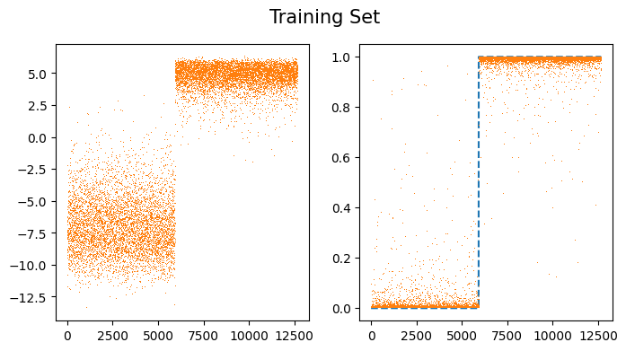
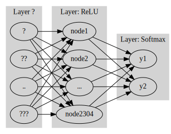
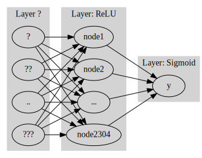

imports
CNN 다중클래스 분류
- 다중클래스에서 변화
- 손실함수 : BCE loss \(\to\) Cross Entropy loss
- 마지막층의 선형 변환 : torch.nn.Linear(?,1) \(\to\) torch.nn.Linear(?,k)
- 마지막층의 활성화 : sig \(\to\) softmax
- 파이토치 한정
- y의 형태 : (n,) vector + int형 or one-hot encoded vector + float 형태
- 손실함수 : torch.nn.BCEWithLogitsLoss \(\to\) torch.nn.CrossEntropyLoss (활성화 함수가 손실함수에 포함되어있음)
- 마지막층의 선형변환 : torch.nn.Linear(?,1) \(\to\) torch.nn.Linear(?,k)
- 마지막층의 활성화 : None \(\to\) None (손실함수에 이미 마지막층의 활성화 포함)
실습 : 3개의 클래스 분류
- training set
X0 = torch.stack([torchvision.io.read_image(str(fname)) for fname in (path/'training/0').ls()])
X1 = torch.stack([torchvision.io.read_image(str(fname)) for fname in (path/'training/1').ls()])
X2 = torch.stack([torchvision.io.read_image(str(fname)) for fname in (path/'training/2').ls()])
X = torch.concat([X0,X1,X2])/255
y = torch.tensor([0]*len(X0) + [1]*len(X1)+ [2]*len(X2))#.reshape(-1,1)- test set
X0 = torch.stack([torchvision.io.read_image(str(fname)) for fname in (path/'testing/0').ls()])
X1 = torch.stack([torchvision.io.read_image(str(fname)) for fname in (path/'testing/1').ls()])
X2 = torch.stack([torchvision.io.read_image(str(fname)) for fname in (path/'testing/2').ls()])
XX = torch.concat([X0,X1,X2])/255
yy = torch.tensor([0]*len(X0) + [1]*len(X1)+ [2]*len(X2))#.reshape(-1,1)1 dls
2 lrnr
3 학습
| epoch | train_loss | valid_loss | time |
|---|---|---|---|
| 0 | 1.907315 | 1.137226 | 00:07 |
| 1 | 1.301616 | 0.839809 | 00:00 |
| 2 | 1.086795 | 0.712145 | 00:00 |
| 3 | 0.952067 | 0.489769 | 00:00 |
| 4 | 0.809088 | 0.334485 | 00:00 |
| 5 | 0.669083 | 0.227808 | 00:00 |
| 6 | 0.553239 | 0.164591 | 00:00 |
| 7 | 0.460001 | 0.127254 | 00:00 |
| 8 | 0.383911 | 0.105844 | 00:00 |
| 9 | 0.322828 | 0.092200 | 00:00 |
4 예측
Sequential(
(0): Sequential(
(0): Conv2d(1, 16, kernel_size=(5, 5), stride=(1, 1))
(1): ReLU()
(2): MaxPool2d(kernel_size=(2, 2), stride=(2, 2), padding=0, dilation=1, ceil_mode=False)
(3): Flatten(start_dim=1, end_dim=-1)
)
(1): Linear(in_features=2304, out_features=3, bias=True)
)| 0 | 1 | 2 | y | |
|---|---|---|---|---|
| 0 | 1.610155 | -7.296218 | -1.949740 | 0 |
| 1 | 2.721445 | -11.693159 | -2.574624 | 0 |
| 2 | 1.159257 | -9.293894 | -0.992080 | 0 |
| 3 | 2.946398 | -10.934134 | -1.913056 | 0 |
| 4 | 2.035376 | -8.698581 | -1.466725 | 0 |
| ... | ... | ... | ... | ... |
| 3142 | -1.260826 | -5.236878 | -0.114429 | 2 |
| 3143 | -4.041571 | -4.725406 | 1.132236 | 2 |
| 3144 | -4.621160 | -4.280747 | 1.188167 | 2 |
| 3145 | -3.100066 | -3.123898 | 0.582833 | 2 |
| 3146 | -2.477711 | -5.302809 | 1.269270 | 2 |
3147 rows × 4 columns
- 대체적으로 첫번째 칼럼의 숫자들이 다른 칼럼보다 크다.
| 0 | 1 | 2 | y | |
|---|---|---|---|---|
| 0 | 1.610155 | -7.296218 | -1.949740 | 0 |
| 1 | 2.721445 | -11.693159 | -2.574624 | 0 |
| 2 | 1.159257 | -9.293894 | -0.992080 | 0 |
| 3 | 2.946398 | -10.934134 | -1.913056 | 0 |
| 4 | 2.035376 | -8.698581 | -1.466725 | 0 |
| ... | ... | ... | ... | ... |
| 975 | -0.421908 | -4.137669 | -1.921860 | 0 |
| 976 | 0.629439 | -6.895987 | -0.959484 | 0 |
| 977 | 1.539558 | -7.074513 | -2.124304 | 0 |
| 978 | 1.117325 | -7.665346 | -1.131635 | 0 |
| 979 | 2.633224 | -6.995299 | -3.818918 | 0 |
980 rows × 4 columns
- 대체적으로 두번쨰 칼럼의 숫자들이 다른 칼럼보다 크다.
| 0 | 1 | 2 | y | |
|---|---|---|---|---|
| 980 | -4.262898 | 1.944668 | -0.949041 | 1 |
| 981 | -3.462561 | 2.556862 | -1.529038 | 1 |
| 982 | -3.882701 | 1.947009 | -1.357661 | 1 |
| 983 | -3.104966 | 2.371521 | -1.705071 | 1 |
| 984 | -3.492548 | 2.551590 | -1.425174 | 1 |
| ... | ... | ... | ... | ... |
| 2110 | -3.436696 | 2.716884 | -1.594630 | 1 |
| 2111 | -3.732119 | 2.664111 | -1.861893 | 1 |
| 2112 | -2.843302 | 2.324082 | -1.652022 | 1 |
| 2113 | -4.504267 | 2.389974 | -1.222201 | 1 |
| 2114 | -3.525925 | 2.375131 | -1.666616 | 1 |
1135 rows × 4 columns
- \(i\) 번째 칼럼의 숫자가 크다 \(\to\) \(y=i\) 일 확률이 크다.
공부 1 : softmax
- softmax를 쓰기 직전의 숫자들은 (n,k) 꼴로 되어 있음, 각 관측치 마다 \(k\)개의 숫자가 있는데, 그 중에서 유난히 큰 하나의 숫자가 있다.
- torch.nn.Softmax() 손계산
(예시1) 잘못된 계산
_netout = torch.tensor([[-2.0,-2.0,0.0],
[3.14,3.14,3.14],
[0.0,0.0,2.0],
[2.0,2.0,4.0],
[0.0,0.0,0.0]])
_netouttensor([[-2.0000, -2.0000, 0.0000],
[ 3.1400, 3.1400, 3.1400],
[ 0.0000, 0.0000, 2.0000],
[ 2.0000, 2.0000, 4.0000],
[ 0.0000, 0.0000, 0.0000]])- 어라? 같은 값인데 확률이 다른 값들이 존재한다….
tensor([[0.0041, 0.0041, 0.0115],
[0.7081, 0.7081, 0.2653],
[0.0306, 0.0306, 0.0848],
[0.2265, 0.2265, 0.6269],
[0.0306, 0.0306, 0.0115]])- 심지어 다 더해서 1이 되지도 않는다…
- 근데 세로로 더하면 1이 되네 핳
(예시 2) 올바른 계산.
tensor([[0.1065, 0.1065, 0.7870],
[0.3333, 0.3333, 0.3333],
[0.1065, 0.1065, 0.7870],
[0.1065, 0.1065, 0.7870],
[0.3333, 0.3333, 0.3333]])(예시 3) 차원을 명시안하면 맞게 계산해주고 경고 줌
UserWarning: Implicit dimension choice for softmax has been deprecated. Change the call to include dim=X as an argument.
sftmax(_netout)tensor([[0.1065, 0.1065, 0.7870],
[0.3333, 0.3333, 0.3333],
[0.1065, 0.1065, 0.7870],
[0.1065, 0.1065, 0.7870],
[0.3333, 0.3333, 0.3333]])(예시 4) 진짜 손계산
tensor([[ 0.1353, 0.1353, 1.0000],
[23.1039, 23.1039, 23.1039],
[ 1.0000, 1.0000, 7.3891],
[ 7.3891, 7.3891, 54.5981],
[ 1.0000, 1.0000, 1.0000]])- 첫번쨰 관측치
0.1353/(0.1353 + 0.1353 + 1.0000), 0.1353/(0.1353 + 0.1353 + 1.0000), 1.0000/(0.1353 + 0.1353 + 1.0000) # 첫 obs(0.10648512513773022, 0.10648512513773022, 0.7870297497245397)- 두번쨰 관측치
array([[0.10650698, 0.10650698, 0.78698605],
[0.33333334, 0.33333334, 0.33333334],
[0.10650699, 0.10650699, 0.78698605],
[0.10650698, 0.10650698, 0.78698605],
[0.33333334, 0.33333334, 0.33333334]], dtype=float32)공부2 : CrossEntropyLoss
one-hot version 손계산
tensor([[-2.0000, -2.0000, 0.0000],
[ 3.1400, 3.1400, 3.1400],
[ 0.0000, 0.0000, 2.0000],
[ 2.0000, 2.0000, 4.0000],
[ 0.0000, 0.0000, 0.0000]])tensor([[0., 0., 1.],
[0., 1., 0.],
[0., 0., 1.],
[0., 0., 1.],
[1., 0., 0.]])(tensor([[0.1065, 0.1065, 0.7870],
[0.3333, 0.3333, 0.3333],
[0.1065, 0.1065, 0.7870],
[0.1065, 0.1065, 0.7870],
[0.3333, 0.3333, 0.3333]]),
tensor([[0., 0., 1.],
[0., 1., 0.],
[0., 0., 1.],
[0., 0., 1.],
[1., 0., 0.]]))- 계산결과
\[\hat {y_i} = \text {softmax(net(X))}\]
\[\text {Cross entropy loss}=-\sum_{i=1}^n y_ilog (\hat y_i)/n\]
- 계산하는 방법도 중요하나, 손실함수에 softmax 활성화함수가 이미 포함되어 있다는 것을 확인하는 것이 더 중요
- 따라서 torch.nn.CrossEntropyLoss() 는 사실 torch.nn.CEWithSoftmaxLoss() 정도로 바꾸는 것이 더 말이 되는 것 같다.
손계산 2 : y가 길이가 n인 벡터
tensor([[-2.0000, -2.0000, 0.0000],
[ 3.1400, 3.1400, 3.1400],
[ 0.0000, 0.0000, 2.0000],
[ 2.0000, 2.0000, 4.0000],
[ 0.0000, 0.0000, 0.0000]])실습 : k = 2로 두면 이진분류도 가능
- download data
training
test
1 dls
2 lrnr
3 학습
| epoch | train_loss | valid_loss | time |
|---|---|---|---|
| 0 | 0.856707 | 0.616278 | 00:00 |
| 1 | 0.680172 | 0.431423 | 00:00 |
| 2 | 0.553872 | 0.280581 | 00:00 |
| 3 | 0.452270 | 0.167101 | 00:00 |
| 4 | 0.369324 | 0.093444 | 00:00 |
| 5 | 0.302544 | 0.052857 | 00:00 |
| 6 | 0.249547 | 0.032362 | 00:00 |
| 7 | 0.207629 | 0.021897 | 00:00 |
| 8 | 0.174271 | 0.016139 | 00:00 |
| 9 | 0.147444 | 0.012657 | 00:00 |
4 예측 및 시각화
Sequential(
(0): Conv2d(1, 16, kernel_size=(5, 5), stride=(1, 1))
(1): ReLU()
(2): MaxPool2d(kernel_size=(2, 2), stride=(2, 2), padding=0, dilation=1, ceil_mode=False)
(3): Flatten(start_dim=1, end_dim=-1)
(4): Linear(in_features=2304, out_features=2, bias=True)
)sftmax = torch.nn.Softmax(dim=1)
sig = torch.nn.Sigmoid()
fig,ax = plt.subplots(1,2,figsize=(8,4))
ax[0].plot(net(X).diff(axis=1).data,',',color="C1") ## \mu_2 - \mu_1
ax[1].plot(y,"--")
ax[1].plot(sftmax(net(X))[:,1].data,',')
#ax[1].plot(sig(net(X).diff(axis=1)).data,',')
fig.suptitle("Training Set",size=15)Text(0.5, 0.98, 'Training Set')
공부: 이진분류에서 소프트맥스 vs 시그모이드
- 이진분류문제 = “y=0 or y=1” 을 맞추는 문제 = 성공과 실패를 맞추는 문제 = 성공확률과 실패확률을 추정하는 문제
softmax: (실패확률, 성공확률) 꼴로 결과가 나옴 // softmax는 실패확률과 성공확률을 둘다 추정한다.
sigmoid: (성공확률) 꼴로 결과가 나옴 // sigmoid는 성공확률만 추정한다.
Code
gv('''
splines=line
subgraph cluster_1{
style=filled;
color=lightgrey;
"?"
"??"
".."
"???"
label = "Layer ?"
}
subgraph cluster_2{
style=filled;
color=lightgrey;
"?" -> "node1"
"??" -> "node1"
".." -> "node1"
"???" -> "node1"
"?" -> "node2"
"??" -> "node2"
".." -> "node2"
"???" -> "node2"
"?" -> "..."
"??" -> "..."
".." -> "..."
"???" -> "..."
"?" -> "node2304"
"??" -> "node2304"
".." -> "node2304"
"???" -> "node2304"
label = "Layer: ReLU"
}
subgraph cluster_3{
style=filled;
color=lightgrey;
"node1" -> "y1"
"node2" -> "y1"
"..." -> "y1"
"node2304" -> "y1"
"node1" -> "y2"
"node2" -> "y2"
"..." -> "y2"
"node2304" -> "y2"
label = "Layer: Softmax"
}
''')
Code
gv('''
splines=line
subgraph cluster_1{
style=filled;
color=lightgrey;
"?"
"??"
".."
"???"
label = "Layer ?"
}
subgraph cluster_2{
style=filled;
color=lightgrey;
"?" -> "node1"
"??" -> "node1"
".." -> "node1"
"???" -> "node1"
"?" -> "node2"
"??" -> "node2"
".." -> "node2"
"???" -> "node2"
"?" -> "..."
"??" -> "..."
".." -> "..."
"???" -> "..."
"?" -> "node2304"
"??" -> "node2304"
".." -> "node2304"
"???" -> "node2304"
label = "Layer: ReLU"
}
subgraph cluster_3{
style=filled;
color=lightgrey;
"node1" -> "y"
"node2" -> "y"
"..." -> "y"
"node2304" -> "y"
label = "Layer: Sigmoid"
}
''')
-둘은 사실상 같은 효과를 주는 모형인데 학습할 파라메터는 sigmoid의 경우가 더 적다.
- sigmoid를 사용하는 모형이 비용은 싸고 효과는 동일하다는 말 이진분류 한정해서는 softmax를 쓰지말고 sigmoid를 써야함.
- 결론
소프트맥스는 시그모이드의 확장이다.
클래스의 수가 2개일 경우에는 (Sigmoid, BCEloss) 조합을 사용해야 하고 클래스의 수가 2개보다 클 경우에는 (Softmax, CrossEntropyLoss) 를 사용해야 한다.
fastai metric 사용
데이터 준비
- download data
- training set
- test set
사용자정의 메트릭 이용
1 dls 만들기
2 lrnr 생성
3 학습
| epoch | train_loss | valid_loss | acc | err | time |
|---|---|---|---|---|---|
| 0 | 0.981153 | 0.635162 | 0.463357 | 0.536643 | 00:00 |
| 1 | 0.695933 | 0.389219 | 0.987234 | 0.012766 | 00:00 |
| 2 | 0.537728 | 0.246010 | 0.987707 | 0.012293 | 00:00 |
| 3 | 0.424565 | 0.138897 | 0.992908 | 0.007092 | 00:00 |
| 4 | 0.333698 | 0.082636 | 0.993853 | 0.006147 | 00:00 |
| 5 | 0.263328 | 0.053516 | 0.994326 | 0.005674 | 00:00 |
| 6 | 0.209578 | 0.037179 | 0.995745 | 0.004255 | 00:00 |
| 7 | 0.168352 | 0.027381 | 0.996690 | 0.003310 | 00:00 |
| 8 | 0.136389 | 0.021127 | 0.997163 | 0.002837 | 00:00 |
| 9 | 0.111303 | 0.016876 | 0.997163 | 0.002837 | 00:00 |
- 예측은 생략
fastai지원 메트릭이용– 잘못된사용
1 dls 생성
2 lrnr 생성
3 학습
| epoch | train_loss | valid_loss | accuracy | error_rate | time |
|---|---|---|---|---|---|
| 0 | 0.981847 | 0.638130 | 0.463357 | 0.536643 | 00:00 |
| 1 | 0.706334 | 0.414463 | 0.463357 | 0.536643 | 00:00 |
| 2 | 0.557118 | 0.275488 | 0.463357 | 0.536643 | 00:00 |
| 3 | 0.448049 | 0.156918 | 0.463357 | 0.536643 | 00:00 |
| 4 | 0.355552 | 0.091275 | 0.463357 | 0.536643 | 00:00 |
| 5 | 0.281673 | 0.058098 | 0.463357 | 0.536643 | 00:00 |
| 6 | 0.224770 | 0.040617 | 0.463357 | 0.536643 | 00:00 |
| 7 | 0.181157 | 0.030589 | 0.463357 | 0.536643 | 00:00 |
| 8 | 0.147395 | 0.024245 | 0.463357 | 0.536643 | 00:00 |
| 9 | 0.120925 | 0.019925 | 0.463357 | 0.536643 | 00:00 |
- 먼가 이상함 \(to\) accuarcy와 error_rate이 좀 잘못됨`
4 예측
Sequential(
(0): Conv2d(1, 16, kernel_size=(5, 5), stride=(1, 1))
(1): ReLU()
(2): MaxPool2d(kernel_size=(2, 2), stride=(2, 2), padding=0, dilation=1, ceil_mode=False)
(3): Flatten(start_dim=1, end_dim=-1)
(4): Linear(in_features=2304, out_features=1, bias=True)
(5): Sigmoid()
)- 예측은 좀 잘한다.
fastai지원 메트릭이용 - 올바른 사용(1)
- 가정
X의 형태는 (n,채널,픽셀,픽셀)로 가정한다.
y의 형태는 (n,) 벡터이다. 즉 \(n \times 1\)이 아니라 그냥 길이가 \(n\) 인 벡터로 가정한다.
y의 각 원소는 0,1,2,3,… 와 같이 카테고리를 의미하는 숫자이어야 하며 이 숫자는 int형으로 저장되어야 한다.
loss function은 CrossEntropyLoss()를 쓴다고 가정한다. (따라서 네트워크의 최종레이어는 torch.nn.Linear(?,클래스의수) 꼴이 되어야 한다.)
1 dls 만들기
(tensor([0, 0, 0, ..., 1, 1, 1]), tensor([0, 0, 0, ..., 1, 1, 1]))2 lrnr 생성
3 학습
| epoch | train_loss | valid_loss | accuracy | error_rate | time |
|---|---|---|---|---|---|
| 0 | 1.237301 | 0.618571 | 0.463357 | 0.536643 | 00:00 |
| 1 | 0.717234 | 0.297716 | 0.965012 | 0.034988 | 00:00 |
| 2 | 0.524121 | 0.141834 | 0.987707 | 0.012293 | 00:00 |
| 3 | 0.388923 | 0.074604 | 0.994799 | 0.005201 | 00:00 |
| 4 | 0.293852 | 0.045211 | 0.996690 | 0.003310 | 00:00 |
| 5 | 0.226063 | 0.028293 | 0.996690 | 0.003310 | 00:00 |
| 6 | 0.176603 | 0.018968 | 0.997163 | 0.002837 | 00:00 |
| 7 | 0.139797 | 0.013722 | 0.997636 | 0.002364 | 00:00 |
| 8 | 0.111825 | 0.010514 | 0.998109 | 0.001891 | 00:00 |
| 9 | 0.090190 | 0.008434 | 0.998582 | 0.001418 | 00:00 |
fastai 지원 메트릭 이용 - 올바른 사용(2)
- 가정
- X의 형태는 (n,채널,픽셀,픽셀)로 가정한다.
- y의 형태는 (n,클래스의수)로 가정한다. 즉 y가 one_hot 인코딩된 형태로 가정한다.
- y의 각 원소는 0 혹은 1이다.
- loss function은 CrossEntropyLoss()를 쓴다고 가정한다. (따라서 네트워크의 최종레이어는 torch.nn.Linear(?,클래스의수) 꼴이 되어야 한다.)
1 dls 만들기
y_onehot = torch.tensor(list(map(lambda x: [1.0,0.0] if x==0 else [0.0,1.0], y)))
yy_onehot = torch.tensor(list(map(lambda x: [1.0,0.0] if x==0 else [0.0,1.0], yy)))
# y_onehot = torch.nn.functional.one_hot(y.reshape(-1).to(torch.int64)).to(torch.float32)
# yy_onehot = torch.nn.functional.one_hot(yy.reshape(-1).to(torch.int64)).to(torch.float32)2 lrnr 생성
3 학습
| epoch | train_loss | valid_loss | accuracy_multi | time |
|---|---|---|---|---|
| 0 | 1.103323 | 0.534813 | 0.465721 | 00:00 |
| 1 | 0.645414 | 0.314861 | 0.941371 | 00:00 |
| 2 | 0.489155 | 0.122688 | 0.990780 | 00:00 |
| 3 | 0.360367 | 0.063362 | 0.995981 | 00:00 |
| 4 | 0.270183 | 0.037917 | 0.996217 | 00:00 |
| 5 | 0.207195 | 0.026166 | 0.996217 | 00:00 |
| 6 | 0.162268 | 0.020020 | 0.996454 | 00:00 |
| 7 | 0.129200 | 0.016123 | 0.996690 | 00:00 |
| 8 | 0.104167 | 0.013462 | 0.997163 | 00:00 |
| 9 | 0.084834 | 0.011523 | 0.997400 | 00:00 |